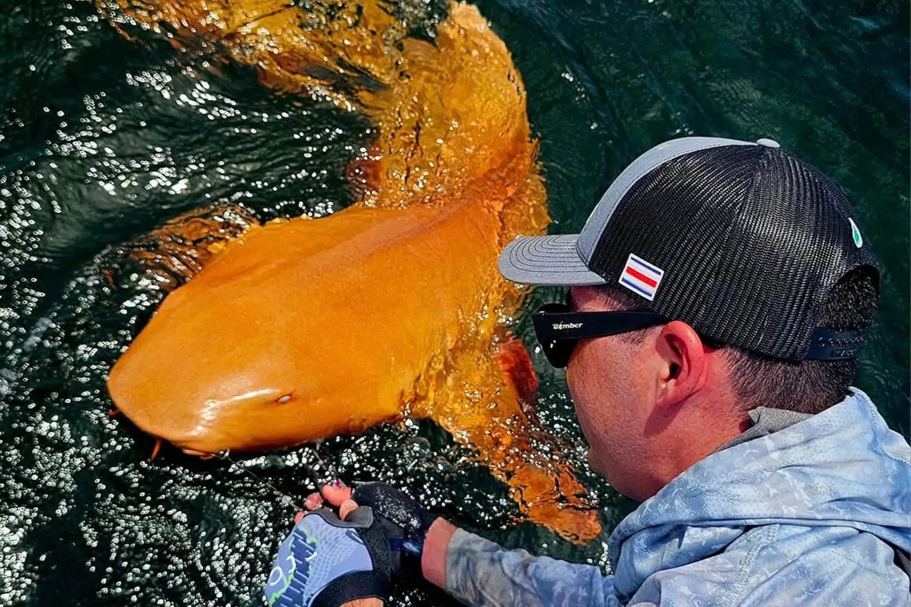

‘El mar todavía tiene cosas que nos van a sorprender’: un tiburón naranja muy inusual fue visto en Costa Rica
Unos científicos publicaron este mes un estudio sobre el tiburón nodriza con un color singular que fue capturado y fotografiado por pescadores deportivos el año pasado.
Fuera lo que fuese, el pez estaba dando pelea. Los pescadores habían pasado media hora intentando llevarlo a la superficie. Enganchado bajo el agua, podría tratarse de un huachinango o una serviola, pensaron, especies grandes de pesca deportiva y con mucha fuerza, conocidas por su gran capacidad de resistir.
Lo que apareció fue algo totalmente distinto.
“Se miró un resplandor naranja al fondo y digo yo: ‘¿Qué es esto, por Dios?’”
dijo Garvin Watson, de 43 años, guía de pesca deportiva y dueño de un hotel en Barra de Parismina, una pequeña localidad en la costa caribeña de Costa Rica.
Un brillante tiburón nodriza, o tiburón gata, de color mandarina se retorcía junto a la embarcación. No se parecía a ningún otro tiburón que Watson, descendiente de una larga estirpe de pescadores, hubiera visto. “Se me paran los pelos todavía solamente recordarme” Watson capturó el tiburón nodriza —animales en su mayoría dóciles cuyo hocico se parece un poco al del siluro— de 1,80 metros en agosto del año pasado, y atrajo cierta atención después de que publicara fotos del animal en las redes sociales.
“Vi las fotos y me quedé impresionado”
dijo Daniel Arauz Naranjo, biólogo marino y director ejecutivo del Centro de Rescate de Especies Marinas Amenazadas de Costa Rica. “Fue como ‘guau, esto es algo extraño’” Este mes, Arauz Naranjo y sus colegas publicaron un estudio sobre el tiburón en la revista especializada Marine Biodiversity.
Llegaron a la conclusión de que la extraña pigmentación del tiburón nodriza —el intenso tono amarillo anaranjado de su cuerpo y los fantasmagóricos ojos blancos sin iris visible— podría ser el resultado de dos condiciones genéticas inusuales que se producen al mismo tiempo: el albinismo y el xantismo.
Tener ambas condiciones al mismo tiempo puede ser extremadamente raro, sobre todo porque los animales que las padecen pueden convertirse en blanco fácil de los depredadores. “Es como una señal de advertencia andante todo el tiempo” dijo Arturo Angulo, ictiólogo de la Universidad de Costa Rica, quien no participó en el estudio.
Los tiburones nodriza, añadió Angulo, suelen depender de su color parduzco para camuflarse en el fondo marino, lo cual es útil para esconderse de las amenazas, pero también para sorprender a las presas que aspiran con su gran garganta.
Pero Angulo ha documentado la misma anomalía de color en algunos peces de agua dulce llamados cíclidos. Las mutaciones genéticas son la explicación más plausible, pero los investigadores creen que también podrían influir otros factores, como el estrés, la dieta o los contaminantes del agua.
Sin embargo, está claro que el tiburón descubierto el año pasado no tuvo problemas para sobrevivir. Arauz Naranjo especuló con que las aguas turbias de la zona podrían haberle ayudado cuando era más pequeño, ocultando sus colores llamativos a los depredadores. “Corrió con la suerte de vivir en este ambiente y de no toparse con ningún otro tiburón más grande” El descubrimiento ha suscitado dudas sobre si no se trata más que de un caso aislado o si podría señalar una tendencia emergente en la población local de tiburones nodriza.
“Me parece impresionante que todavía a estas alturas alguien pueda ir ahí, al mar, cerca de la costa, y descubrir algo que no haya sido registrado para la ciencia todavía” “El mar todavía tiene cosas que nos van a sorprender”
Dónde está ahora el tiburón, solo él —y cualquier otra vida marina sorprendida al ver a un depredador naranja por ahí— lo sabría.
Watson dijo que un grupo de biólogos se había puesto en contacto con él para bucear el próximo año en el mismo lugar donde vio al animal, con la esperanza de volver a encontrarlo o al menos estudiar si algo en el entorno podría estar relacionado con su color peculiar.
Pero ni a Watson ni a su equipo se les pasó por la cabeza la idea de quedarse con el tiburón nodriza, dijo.